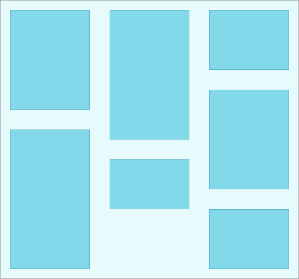

we introduce a new, powerful tool called CSS Grid. The grid can be used to lay out entire web pages. Whereas
Flexbox is mostly useful for positioning items in a one-dimensional layout, CSS grid is most useful for two-dimensional layouts,
providing many tools for aligning and moving elements across both rows and columns.

Grids Template Columns
By default, grids contain only one column.
We can define the columns of our grid by using the CSS property grid-template-columns.
The first column will be 100 pixels wide and the second column will be 200 pixels wide
We can also define the size of our columns as a percentage of the entire grid's width
width: 1000px;
grid-template-columns: 20% 50%;
In this example, the grid is 1000 pixels wide. Therefore, the first column will be 200 pixels wide because it is set to be 20% of the grid's width. The second column will be 500 pixels wide.
We can also mix and match these two units.
width: 100px;
grid-template-columns: 20px 40% 60px;
Grid Template Rows
To specify the number and size of the rows, we are going to use the property grid-template-rows
This grid has two columns and three rows. grid-template-rows defines the number of rows
and sets each row's height. In this example, the first row is 50 pixels tall (10% of 500), the
second row is 100 pixels tall (20% of 500), and the third row is 600 pixels tall.
When using grid-template, the values before the slash will determine the size of each row. The values after the slash determine the size of each column.
Dealing With Widths
Fr Unit
By using the fr unit, we can define the size of columns and rows as a fraction of the grid's length and width.
grid-template: 2fr 1fr 1fr / 1fr 3fr 1fr;
Repeat() Function
The properties that define the number of rows and columns in a grid can take a function as a value. Repeat() is one of these functions.
repeat(5, 1fr) would split your table into five equal rows or columns.
Finally, the second parameter of repeat() can have multiple values:
grid-template-columns: repeat(2, 20px 50px)
Minmax() Function
Sometimes you might want a grid to resize based on the size of your web browser.
You might want to prevent a row or column from getting too big or too small.
The minmax() function can help us solve this problem.
In this example, the first and third columns will always be 100 pixels wide, no matter the size of the grid. The second column, however, will vary in
size as the overall grid resizes. The second column will always be between 100 and 500 pixels wide.
To see minmax() in action, we need to first make the grid have a variable width. Delete the width property from .grid
Grid Gap
The CSS properties grid-row-gap and grid-column-gap will put blank space between every row and column in the grid.
Grid-gap does not add space at the beginning or end of the grid.
There is a CSS property grid-gap that can set the row and column gap at the same time.
grid-gap: 20px 10px;
The code above will set the distance between rows to 20 pixels and the distance between columns to 10 pixels.
If only one value is given, it will set the column gap and the row gap to that value.